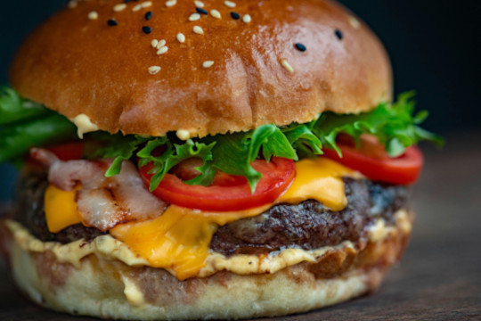

Home
Burger

Description
A burger is the ultimate handheld feast—juicy grilled patty, melty cheese, fresh lettuce, tomatoes, and your favorite sauces, all stacked between soft, toasted buns. It's simple, satisfying, and packed with flavor in every bite.
From backyard barbecues to diner classics, burgers are endlessly versatile. Go beefy, go veggie, go wild with toppings—whatever your style, there’s a burger out there calling your name.
Ingredients
- 1 pound ground beef (80/20 blend recommended)
- 4 burger buns
- 4 slices of cheddar or American cheese
- 4 lettuce leaves
- 1 large tomato, sliced
- 1 small onion, sliced
- Pickles (optional)
- Salt and pepper to taste
- Condiments such as ketchup, mustard, mayonnaise
- Butter or oil for toasting buns
Steps
- Preheat a grill or skillet over medium-high heat.
- Form ground beef into 4 equal patties, slightly larger than the buns. Season both sides with salt and pepper.
- Cook patties for about 3-4 minutes per side for medium doneness.
- Place a slice of cheese on each patty during the last minute of cooking to melt.
- Meanwhile, lightly butter the buns and toast them on the grill or skillet until golden.
- Assemble the burgers by layering lettuce, tomato, onion, pickles (if using), the cheesy patty, and your favorite condiments on the toasted buns.
- Serve immediately with fries, chips, or your favorite side.